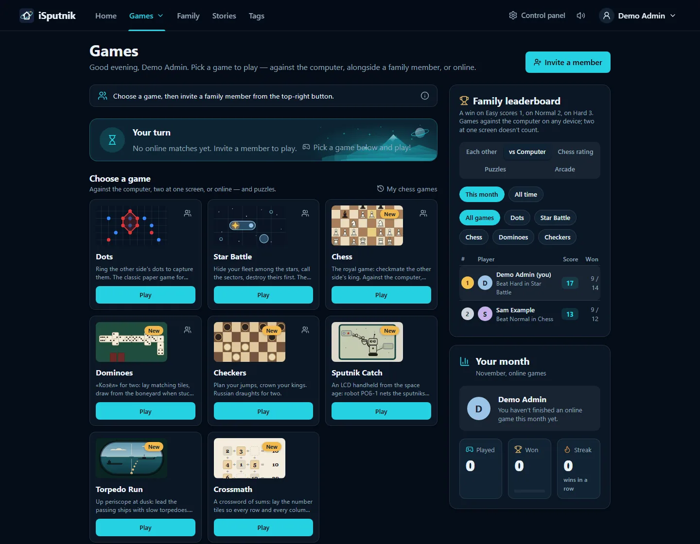

Board games
The ones the family already knows.
- Chess, with blitz clocks, draw offers and a coach
- Checkers — Russian draughts
- Dominoes: Kozyol for two
- Dots
- Star Battle — a sea battle in space
FAMILY GAMES · ADD-ON BESIDE ISPUTNIK.HOME Beta
Chess, checkers, dominoes and more — two on one screen, against the computer, or online between family members on any device. Signed in once, through iSputnik, and played on your own server.

WHAT IT DOES
The ones the family already knows.
Something quick between the long games.
Across the table or across the country.
For the family’s bragging rights.
SCREENSHOTS
PRIVATE HERE, SPECIFICALLY
The general promises hold everywhere. These are the ones that matter most for family games.
Online games are played between members of your household, on your server. There are no strangers, no public lobbies and no chat with the internet.
A guest link opens one match and nothing else — no library, no photos, no other games.
No adverts, no in-app purchases and no account with anybody. The games are simply there.
The games container never faces the network. Sign-in, two-factor and rate limits are iSputnik’s, so they cover every game too.
WORKS WITH
WHAT YOU NEED
isputnik.games container, from Unraid Community Applications or Docker, paired with a secret made in the control panel.Yes, with their own account, from any browser — as long as your iSputnik can be reached from outside the house.
For one match, yes: invite them as a guest, and the link opens that match only.
Chess, Checkers, Sputnik Catch and Torpedo Run are built into iSputnik TV, played with the remote.
Yes. Once opened, games against the computer and on one screen carry on offline.